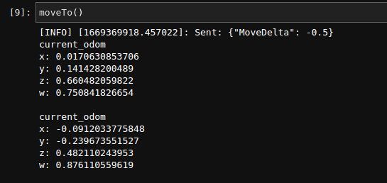

Coding Explanation
Robot Movement
For our movement, there are four main instructions that we may send to our robot.
… MoveForward, MoveBackward, TurnLeft, TurnRight, MoveDelta, TurnDelta
Move Forward indefinitely
Move Forward for a cetrain distance
Move Backward indefinitely
Turn for a specified angle
Turn Left
Turn Right
Stop the movement.
All of the above commands are transmitted to the robot through a Publisher object in a json string format.
Specific methods are as follows:
Initialization
Before we are able to send commands to our robot, we need to initialize a Publisher object from the rospy library. To initialize a rospy.Publisher class, we need to provide a topic name, a message class, and a queue size.
For our application we will have:
topic name:
'/robot_command'message class:
Stringqueue size: 1
pub = rospy.Publisher('/robot_command', String, queue_size=1)
After initializing a Publisher object, initialize a ROS node. This can be done using the init_node function from the rospy library. When we initialize a node, we are creating an executable that can communicate with other nodes.
rospy.init_node('zetabot', anonymous=True) time.sleep(1) # wait for 1 second for the initialization to take place
Sending commands
After the initialization process is complete we can start to send commands to our robot.
First create a json string that contains the instructions. We may achieve this by first creating a python dictionary and converting it into jason string.
Here are the 4 possible commands that we may send to the robots.
Moving Forwards
python_dict = {"MoveForward": 1} json_string = json.dumps(python_dict)
Moving Forwards for a specific distance.
The distance inforamtion must be given within the python dictionary. The metrics used are in meters.
python_dict = {"MoveDelta": 1} # 1 as in 1 meters. (if the number is negative, the robot will go backwards.) json_string = json.dumps(python_dict)
Moving Backward
python_dict = {"MoveBackward": 1} json_string = json.dumps(python_dict)
Turning around for a specific angle.
The angle information must be given in a radian metric. We import math library so that we may use degrees and convert it into radian within the instructions.
python_dict = {"TurnDelta": math.radians(90)} # Turn anti-clockwise for 90 degrees. (if the number is negative the robot will turn clockwise) json_string = json.dumps(python_dict)
Turning Left
The angle information must be given in a radian metric. We import math library so that we may use degrees and convert it into radian within the instructions.
python_dict = {"TurnLeft": 1} # Turn anti-clockwise for 90 degrees. (if the number is negative the robot will turn clockwise) json_string = json.dumps(python_dict)
Turning Right
The angle information must be given in a radian metric. We import math library so that we may use degrees and convert it into radian within the instructions.
python_dict = {"TurnRight": 1} # Turn anti-clockwise for 90 degrees. (if the number is negative the robot will turn clockwise) json_string = json.dumps(python_dict)
Stopping any movement
python_dict = {"Stop": 0} json_string = json.dumps(python_dict)
With rospy library, log the commands written above in the format below: (this is for logging our commands sent to the robot)
rospy.loginfo("Sent: %s", json_string)
Finally publish the instruction to the robot using the Publisher object we initialized:
pub.publish(json_string)
Combining the movement instructions to a single python function
Moving forwards:
def move(): tmp = {"MoveForward": 1} msg = json.dumps(tmp) rospy.loginfo("Sent: %s", msg) pub.publish(msg)
Moving forwards for a specified distance:
def moveTo(distance): tmp = {"MoveDelta": distance} msg = json.dumps(tmp) rospy.loginfo("Sent: %s", msg) pub.publish(msg)
Turning around for a specified angle:
def turnTo(degree): tmp = {"TurnDelta": math.radians(int(degree))} msg = json.dumps(tmp) rospy.loginfo("Sent: %s", msg) pub.publish(msg)
Stopping the robot movement:
def stop(): tmp = {"Stop": 0} msg = json.dumps(tmp) rospy.loginfo("Sent: %s", msg) pub.publish(msg)
Odometry Information
In order to gather odometry information of our robot, we need to be linked with our ros node so that we may listen to all the commands sent to the robot.
For this we must create two functions one for processing the current location in relation to the starting position and one for when to process the odometry.
Odometry calculation
When the motor is in session, serial output data is generated and logged. We listen to these outputs using the rospy.Subscriber() function.
Since the serial information is given at every interval, we need to have a way to controll the amount of data processed.
To achieve this, we Subscribe to the motor_drive_serial_input and process odometry information every 0.1 seconds.
def process_serial_input(data): global is_robot_move if len(data.data) != 0: is_robot_move = True rospy.sleep(0.1) is_robot_move = False
We connect the above function with the Subscriber.
rospy.Subscriber("motor_driver_serial_input", UInt8MultiArray, process_serial_input, queue_size=1)
The above code is set up so that every time there is an input stream from the motor drives, we ossilate is_robot_move variable from false to true back to false. This interval is only for 0.1 seconds.
We set up and calculate out odometry information during this period.
First the function that would process the information:
def process_odom(data): if is_robot_move == True: x = data.pose.pose.position.x y = data.pose.pose.positioan.y z = data.pose.pose.orientation.z w = data.pose.pose.orientation.w print("current_odom\nx: {}\ny: {}\nz: {}\nw: {}\n".format(x,y,z,w)) rospy.sleep(0.5)
After writing the
process_odomfunction, we will have to connect it to the Subscriber.rospy.Subscriber("odom", Odometry, process_odom, queue_size=1)
We set up our function so that it would wait total of half a second every time it calculates the odometry information.
In total, whilst the robot is moving, we will be able to extract odometry information every 0.6 seconds.
Since we wish to have these Subscribers listening to the motor drivers constantly we will have to put the rospy functions on loop with the following functions:
rospy.spin()
Starting the Calculation
To start the odometry calculation, we will have to put the Subscribers into a thread and start the functions.
def subs():
rospy.Subscriber("motor_driver_serial_input", UInt8MultiArray, process_serial_input, queue_size=1)
rospy.Subscriber("odom", Odometry, process_odom, queue_size=1)
rospy.spin()
x = threading.Thread(target=subs)
x.start()
After assigning the Subscribed functions to the thread and starting the thread, you have initialized the starting position of the robot.
Now, whenever the robot is moved with the move information created above, the odometry information will be calculated and displayed automatically.
{kind=link}